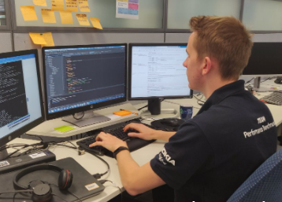
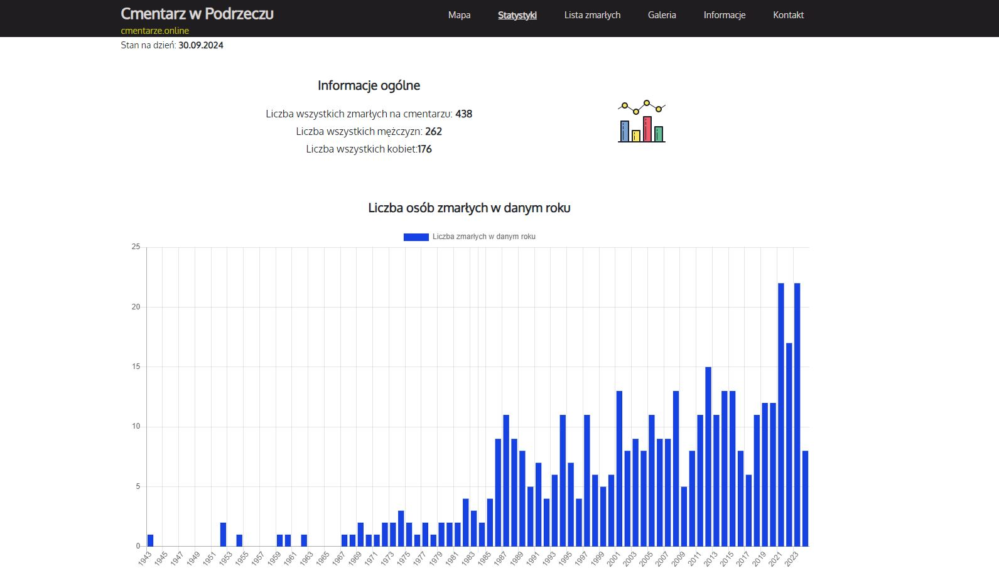
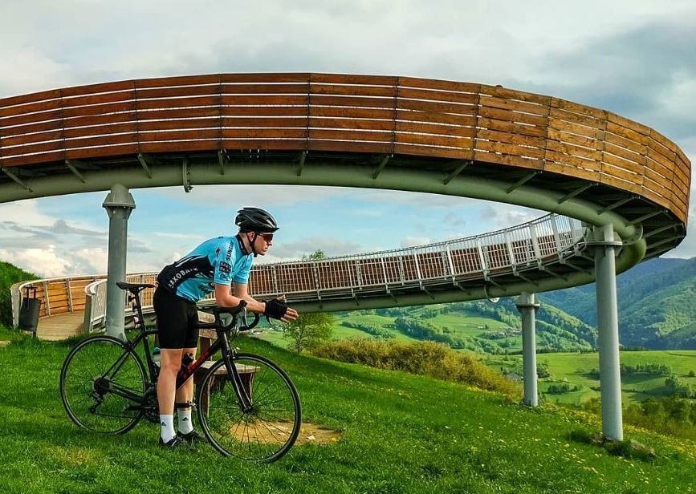

You had to get lost on the Internet to get here or actually you made an effort to find me.
Anyway, welcome to my home page!
You can find here some information about me, my work, my projects and my hobbies.
About
My name is Kamil Łęczycki
In 2019, I graduated from AGH University of Science and Technology (Electronics and Telecommunications).
Local Product Owner at Nokia with a software engineering background and experience delivering networking solutions used by telecom operators worldwide. Experienced in backlog management, features prioritization, roadmap creation and lead of cross-functional engineering teams.
My technical background in software development gives me a good look at product. I actively leverage AI tools to improve my productivity and constantly explore new ways of increasing engineering efficiencyContact: kamil.leczycki.ns@gmail.com

Work
Nokia, Kraków
2017 - now
-
Local Product Owner
01/2023 – now- Owning the team product backlog, prioritizing features, planning releases, and managing delivery risks in an Agile environment using Jira, Confluence.
- Coordination of the work of more than 20 software engineers.
- Feature Owner Team Leader, acting as Project Manager, coordinating end-to-end delivery of new software features throughout the entire development lifecycle.
- Collaboration with architects, developers, testers, managers, directors to align technical solutions with business priorities.
-
Software Engineer
10/2021 – 12/2022- Developed and maintained of Layer 2 Packet Scheduler (C++).
- Served as part-time team Scrum Master: facilitating sprint planning, daily stand-ups, backlog refinement, and task tracking in Jira.
-
Software Engineer, Web Applications
05/2019 – 12/2021- Developed and maintained a web application for configuring 5G BTS (eNB, gNB) using Angular, TypeScript, JavaScript, npm.
- Analyzed and resolved issues reported by testers and customers.
- Developed, maintained and administered a local CI/CD environment: Jenkins, Docker, gerrit, bash, Python.
-
Summer Intern Working Student
07/2017 – 04/2019- Developed and maintained a test automation environment for 4G and 5G systems: Python, Perl, Jenkins.

Projects
In my free time I like to work at my own projects.
Some of them:
-
cmentarze.online
Online Cemetery Browser. The Cemetery App allows to find graves of the deceased, see cemetery's statistics etc. More than 10k visits of page
-
Otodom AI Predictor
AI Flat Price Predictor
-
Futbol Klasy A
YouTube channel about the best football league in Poland

Hobbies
- Cycling, check out my Strava
- Financial markets, economy, darts, books, IT
- I like to watch sports live:
- 19.05.2019: AC Milan - Frosinone
- 19.01.2020: Hertha Berlin - Bayern Munchen
- many times: Cracovia
- 31.07.2022: F1: Hungarian GP 2022 - Hungarouring
- 30.10.2022: European Championship Dart 2022 Dortmund
- 01.2023: Handball World Championship 2023 Kraków
- KSW 75, 85, 100
- 15.06.2024: Superbet Poland Darts Masters Gliwice
- 25-27.07.2025: F1: Belgian GP 2025 - Spa